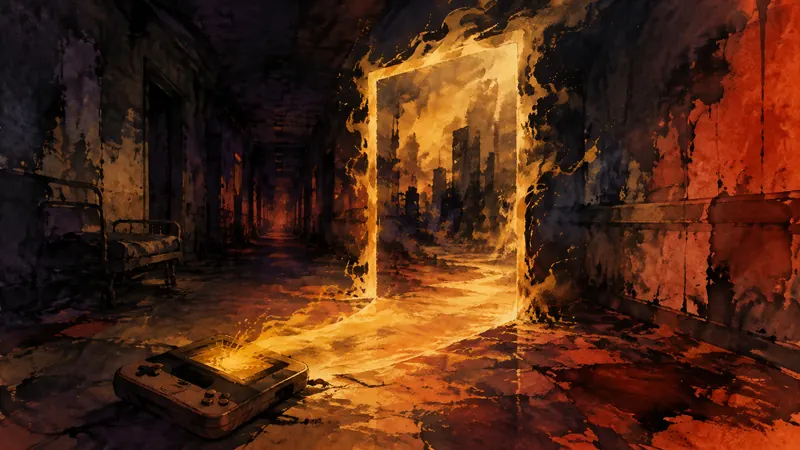

4Gamer.net

手機生存恐怖遊戲《The Phenomenon》登上 Steam（譯）
一款手機時代的生存恐怖遊戲登上 Steam，便利的新入口能否保留原作最重要的恐怖感，仍待確認。
觀點：把手機時代的作品帶到 Steam，替玩家保留了原本可能因裝置更迭而消失的遊玩選項。
先鴉｜黎明快訊
玩家能動性：政策如何限制它、產業如何形塑它、敘事設計如何實現它。
第一線
4Gamer.net

一款手機時代的生存恐怖遊戲登上 Steam，便利的新入口能否保留原作最重要的恐怖感，仍待確認。
觀點：把手機時代的作品帶到 Steam，替玩家保留了原本可能因裝置更迭而消失的遊玩選項。
4Gamer.net
《ZENONIA》原點帶著 6,300 萬次下載的歷史登上 Steam，現代化調整也可能改變玩家記憶中的節奏。
觀點：現代化介面降低了玩家回頭接觸舊作的門檻，也讓保存遊戲不必等同於忍受過時操作。
AUTOMATON

從死因調查走向連續殺人案，這款遊戲把觀察與等待答案的過程，放在快速通關之前。
觀點：以死因調查作為入口，讓玩家的判斷時間成為遊戲內容，而不是需要被加速的空白。
AUTOMATON

一名前總監稱生成式 AI 已被開發者普遍採用，但缺少產業調查，爭議也因此從工具轉向透明度。
觀點：這場爭論真正牽動玩家的，是作品背後哪些勞動被看見、哪些責任被模糊，而不只是支持或反對一項工具。